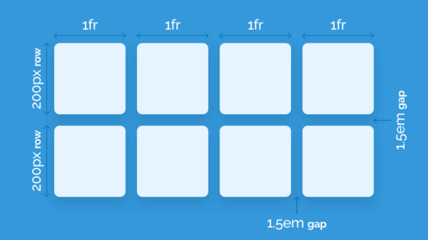

CSS Grid
Es un sistema bidimensional, esto quiere decir que se maneja con filas y columnas, esta es la
principal diferencia con Flexbox, ya que este trabaja con un sistema unidimensional, esto quiere
decir que usar CSS grid amplía nuestras posibilidades de desarrollo, ocupando características
para crear páginas con diseños que hacer un tiempo atrás parecían casi imposibles.

Ventajas y desventajas de CSS Grid
Las ventajas son las siguientes:
• La disposición de los elementos es mucho más fácil porque las columnas sirven como pautas para
ubicación.
• Si usa una cuadrícula CSS prediseñada, no es necesario hacer nada de matemáticas para lidiar
con los anchos de columna y medianil. El autor de la cuadrícula ya se ha encargado de ello.
• Podemos compilar más rápido, ya que todo lo que tenemos que hacer es agregar clases
específicas a nuestros contenedores en nuestro HTML y, en su mayor parte, el diseño se realizará
instantáneamente.
• Comprender las cuadrículas en diseño web es relativamente simple, por lo que mejorar / editar
el marcado y el código de otra persona en un proyecto ya construido es menos doloroso que si no
hubieran usado una cuadrícula CSS.
Si la cuadrícula responde o se adapta, no tenemos que preocuparnos demasiado por los puntos de
interrupción.
• Si usamos una cuadrícula CSS de terceros, ya se han resuelto los problemas entre navegadores.
Las desventajas son las siguientes:
• Algunas cuadrículas CSS tienen una curva de aprendizaje más pronunciada que otras.
• Con muchas cuadrículas CSS, estamos atrapados en el uso de las convenciones de nombres que
creó el autor.
• Es posible que tengamos que cambiar / adaptar la forma en que escribimos nuestro HTML.
• Hay tantos CSS cuadrículas para elegir que puede ser abrumador para algunos.
Si nuestro contenido se rompe en ciertos puntos que la cuadrícula no es compatible, tenemos que
dedicar tiempo a modificar la cuadrícula original para que se ajuste a cada situación
individual.
Grefa Ajon, C. J., & Aragón Vargas, B. S. (2019). Desarrollo de un sistema web para la gestión
de procesos de la Veterinaria Animal’s VET (Bachelor's thesis, Escuela Superior Politécnica de
Chimborazo). Recuperado de:
http://dspace.espoch.edu.ec/handle/123456789/13651